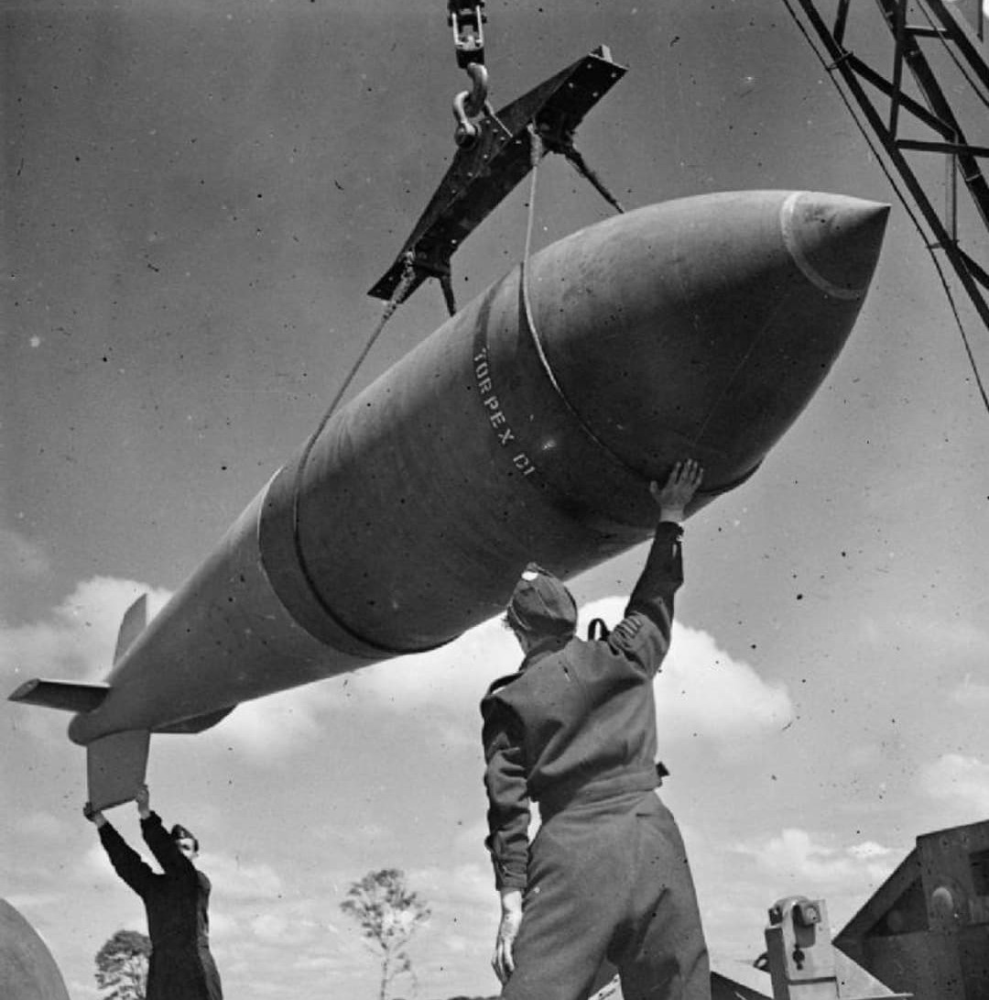
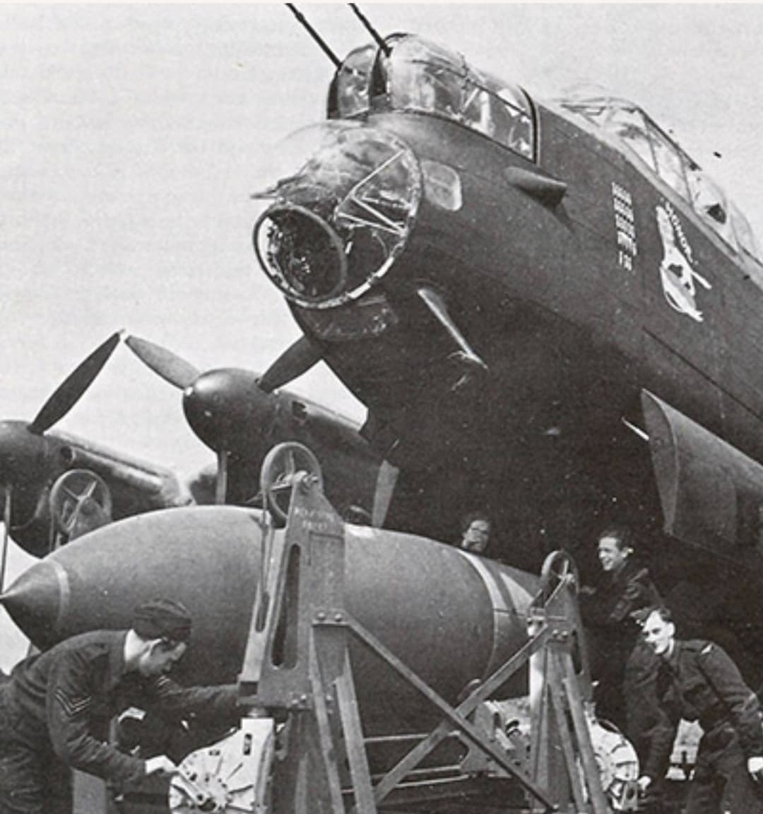
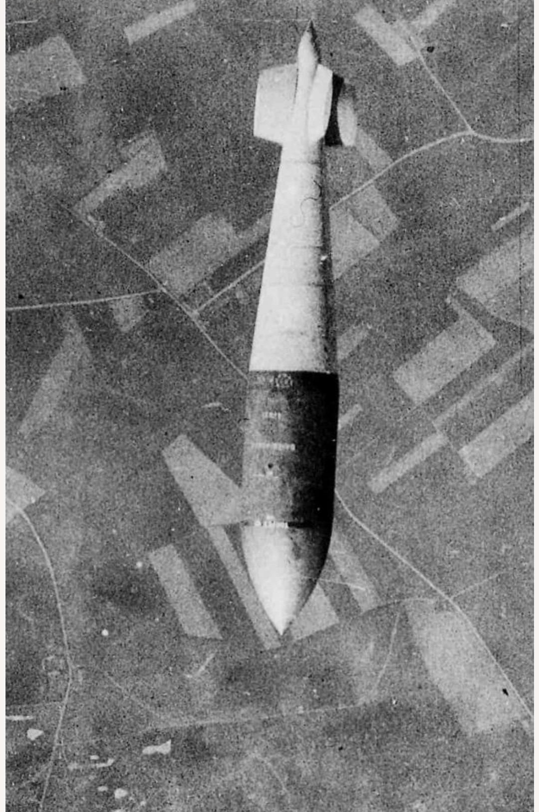
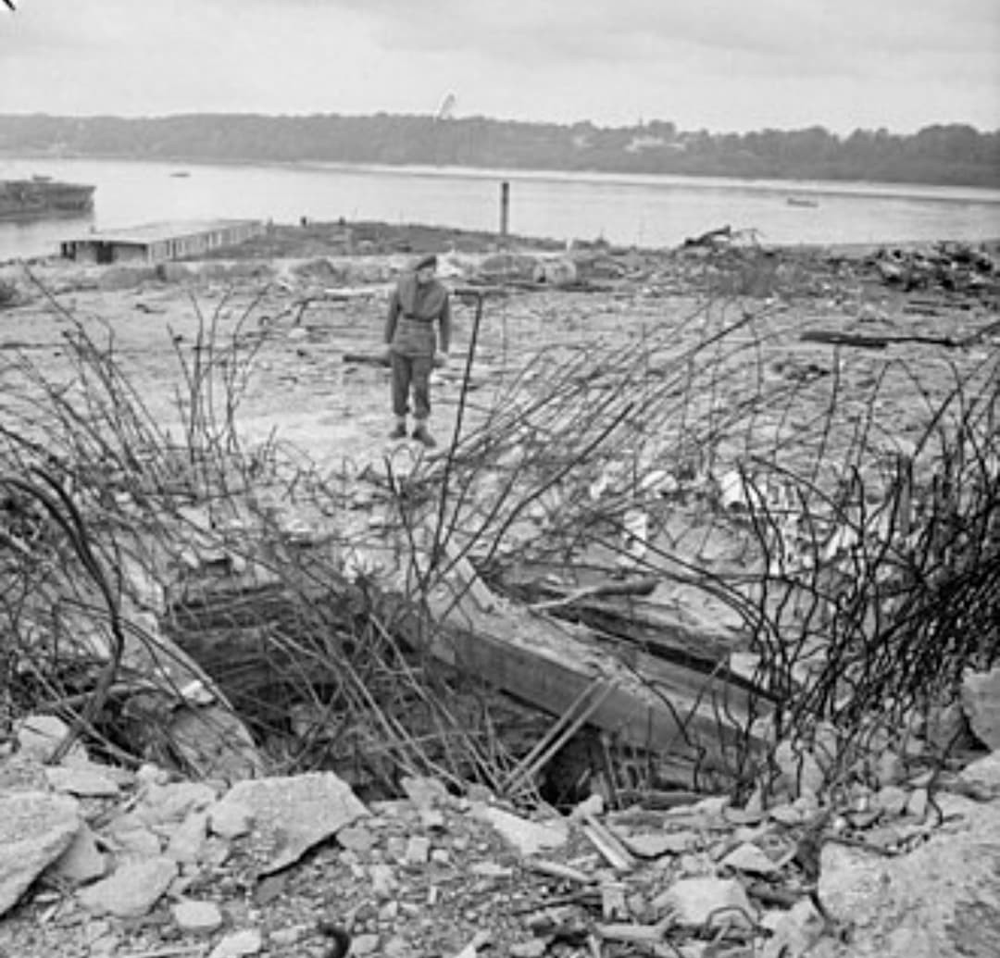

La Tallboy est une bombe perforante britannique de 5,4 tonnes, conçue pour détruire les structures allemandes les plus fortifiées : blockhaus, bases de sous-marins, sites V2, tunnels et navires capitaux.
Conçue par Barnes Wallis, la Tallboy est une bombe sismique utilisée par la Royal Air Force, principalement par les bombardiers Avro Lancaster du No. 617 Squadron.
Son objectif : frapper en profondeur, provoquer des effondrements internes et rendre inutilisables les installations stratégiques du Reich.
La Tallboy est conçue pour pénétrer le sol ou le béton avant d’exploser. Sa forme aérodynamique lui permet d’atteindre près de 1 200 km/h en chute libre.
Elle agit comme une bombe sismique :
– pénétration profonde,
– explosion souterraine,
– onde de choc,
– effondrement de la structure au-dessus.

Les Lancaster sont modifiés pour transporter la Tallboy : compartiment agrandi, renforts structurels, largage à haute altitude pour une précision maximale.
Poids : 5 400 kg
Explosif : 2 400 kg de Torpex
Longueur : 6,4 m
Type : Bombe perforante / sismique
Avion porteur : Avro Lancaster

Larguée à haute altitude, la Tallboy conserve une trajectoire stable et précise, permettant de frapper des cibles très protégées.
Tirpitz : la Tallboy participe à la destruction du cuirassé allemand en 1944.
Blockhaus d’Éperlecques : fissuré et rendu inutilisable pour les fusées V2.
La Coupole : effondrements internes empêchant la mise en service du site.
Bases de U‑boats : toits de béton fracturés à Brest, Lorient, Saint‑Nazaire.
Tunnel de Saumur : détruit, bloquant les renforts allemands lors du Débarquement.

Le cratère laissé par une Tallboy montre la puissance de l’explosion souterraine et l’effet sismique sur les structures.
La Tallboy prouve qu’aucune structure n’est invulnérable. Elle ouvre la voie à une bombe encore plus massive : la Grand Slam, également conçue par Barnes Wallis.